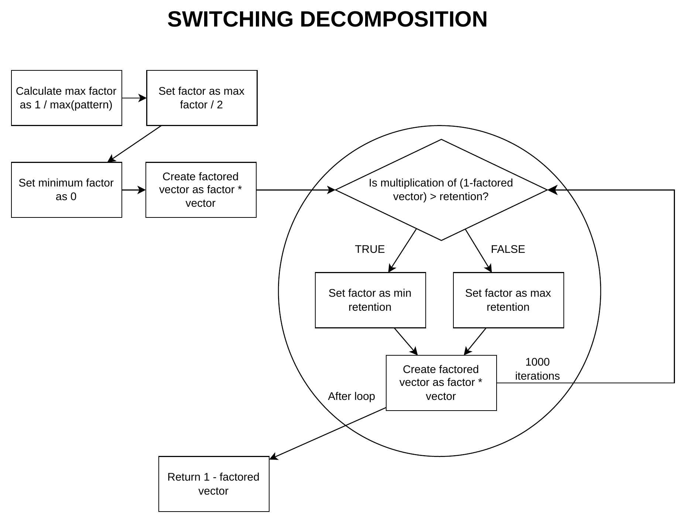
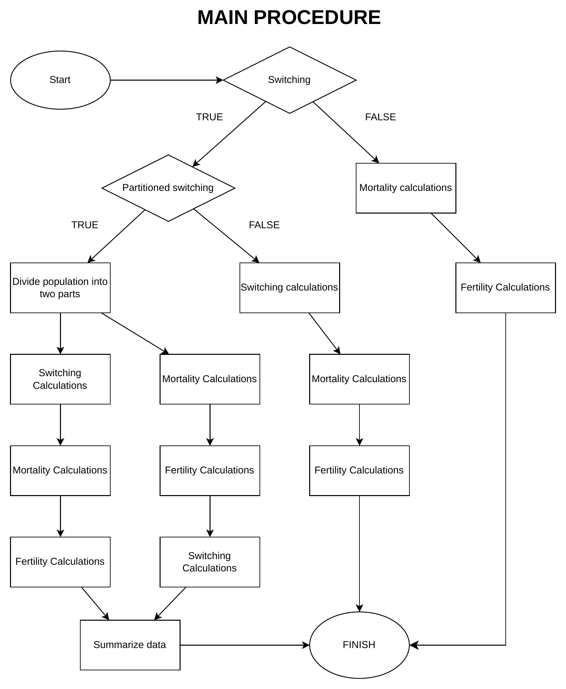
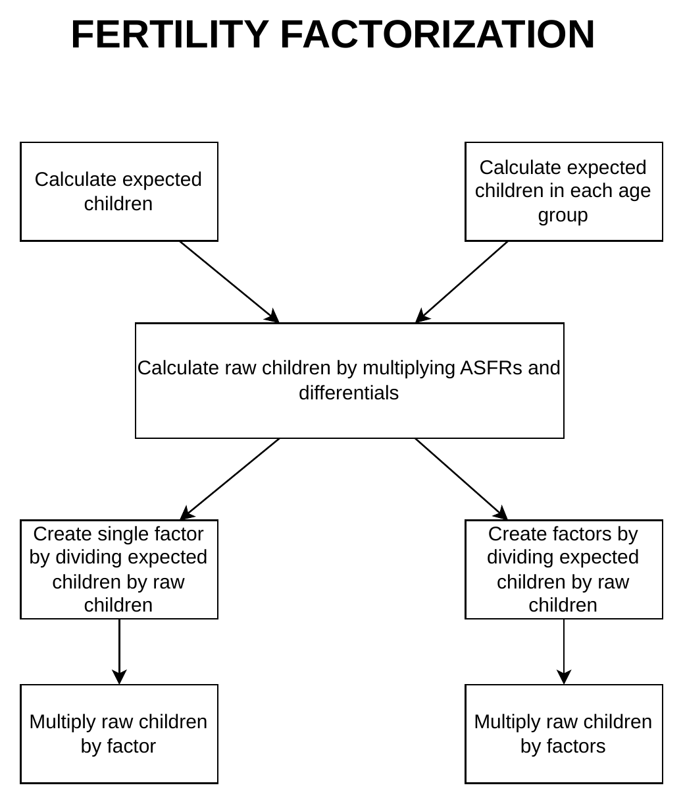
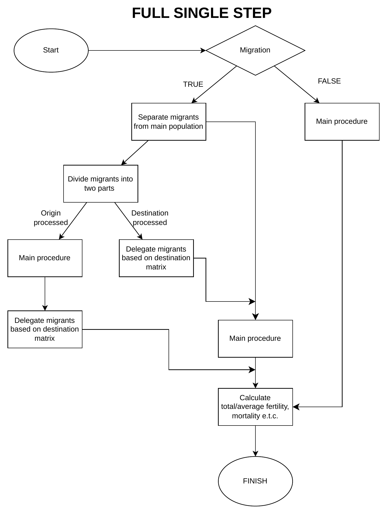

This vignette explains the internal structure of the two core R5 reference class objects and four key algorithms of the MRC package, each algorithm illustrated by a flow diagram extracted from the package’s design document.
For the user-facing workflow that drives these internals, see Conducting an MRC Projection.
1 Object structure
Country_object
One Country_object instance is created per country by
object_loader() inside create_country_list().
It carries all demographic inputs, projection settings, and accumulated
outputs for a single country throughout the full projection
lifetime.
Identity fields
| Field | Type | Description |
|---|---|---|
name |
character | Country name |
code |
numeric | ISO 3166-1 numeric country code |
region |
character | World region the country belongs to |
year |
numeric | Current projection year; advances by 5 at every step |
period |
character | Current five-year period label used in output tables
(e.g. "2020-2025") |
Input data fields
| Field | Type | Description |
|---|---|---|
structure_data |
list of matrices | Population by age group, sex, and religion. Each list element is a 40 × n_religions matrix keyed by year label. Before projection only the starting year is present; each step appends a new entry. |
mortality_rates |
matrix | Age- and sex-specific survival ratios. 42 rows (21 male + 21 female age groups, including age 0); one column per projection period. |
age_specific_fertility_rates |
matrix | Total-population ASFRs. Rows = projection periods; columns = fertile age groups. |
fertility_differentials |
list | Per-period matrices of religion-specific fertility multipliers. A value of 1.0 means the religion matches the national ASFR; values above / below indicate higher / lower relative fertility. |
sex_ratio |
numeric vector | Fraction of male births for each projection period. |
switching_matrices_list |
list | Decomposed switching probability matrices — one 40 × n_religions matrix per origin religion. Row j, column k gives the proportion of people in age–sex group j of origin religion i who end up in religion k. |
outmigration_rates |
list | Out-migration rate matrices by period. |
destination_matrix |
matrix | Share of emigrants directed to each destination country, by sex and religion. |
start_fertility_group |
numeric | Index of the first female age group included in fertility calculations (default 3, corresponding to age 10–14). |
combined_fertility_factorization |
logical | Controls the factorisation path in fertility_step().
TRUE (default) applies one global factor across all fertile
age groups; FALSE normalises each age group
independently. |
Output data fields — accumulated across steps by
calculate_total_previous()
| Field | Type | Description |
|---|---|---|
previous_mortality |
data.table | Deaths by age, sex, religion, and period. See Exporting Projection Results vignette for column details. |
previous_fertility |
data.table | Births by fertile age group, religion, and period. |
previous_asfr |
data.table | Age-specific fertility rates; rows with
Mother_age_group == "TFR" contain the period total. |
previous_fertility_exposure |
data.table | Female population used as the ASFR denominator. |
previous_switching |
data.table | Switching flows from each origin religion to each destination religion. |
previous_immigration |
data.table | Immigrant flows arriving at this country from each origin. |
previous_emigration |
data.table | Emigrant flows leaving this country for each destination. |
Technical fields
| Field | Description |
|---|---|
temp |
Scratch space used during projection steps; not intended for direct access. |
emigration_list |
Internal buffer accumulating emigrants by destination during step 1 of the migration loop. |
projection_owner |
Name of the Projection_object that has claimed this
country. An empty string means the country is unclaimed. Prevents the
same country list from being reused across multiple projections. |
Projection_object
One Projection_object is assembled by
create_projection_object() and validated by
variants_loader(). It acts as the top-level container for
an entire projection scenario — holding the list of country objects, the
global settings, and pointers to region aggregates.
Configuration fields
| Field | Type | Description |
|---|---|---|
projection_name |
character | Unique name of the scenario; used as the default output folder name. |
steps |
numeric | Number of 5-year projection periods to simulate. |
migration |
logical | Whether migration (emigration and immigration) is applied. |
switching |
logical | Whether religious switching is applied. |
switching_type |
numeric |
1 = partitioned (split half–half); 2 = all
switching before demographic processes. |
no_diff |
logical | If TRUE, all religions use the same aggregate ASFR (no
fertility differentials). |
post_switch |
logical | If FALSE (default), switched individuals remain in the
general population and may switch again in subsequent steps. If
TRUE, they are moved into separate
*_post_switch output columns and excluded from further
switching. |
light_migration |
logical | If TRUE, migration output is collapsed to period totals
rather than age–sex breakdowns. |
light_switching |
logical | If TRUE, switching output is collapsed to period
totals. |
resolved |
logical | Becomes TRUE after project() completes;
prevents re-projection of the same object. |
Container fields
| Field | Type | Description |
|---|---|---|
country_object_list |
list | Named list of Country_object instances, one per
country. Keys follow the pattern "c840" for ISO code
840. |
region_object_list |
list | Named list of Region_object instances. Populated after
project() when save_totals = TRUE. |
2 The loader — Loader.R
Loader.R contains every function involved in
transforming the raw base_data_list into fully populated
Country_object instances. The public entry point is
create_country_list(); all other functions are
internal.
base_data_list slot reference
base_data_list is a numbered list. The table below shows
which slot is consumed by which loader function.
| Slot | Contents | Used by |
|---|---|---|
[[1]] |
Age-specific fertility rates (ASFR) by country and period |
object_loader() →
age_specific_fertility_rates
|
[[2]] |
Religion-specific fertility differentials by country and age group |
object_loader() →
fertility_differentials
|
[[3]] |
Migration destination-share matrix (origin × destination country) |
migration_limit_check(), object_loader() →
destination_matrix
|
[[4]] |
Out-migration rates by country, sex, age, and period |
object_loader() → outmigration_rates
|
[[5]] |
Fraction of boys at birth by country and period |
object_loader() → sex_ratio
|
[[6]] |
Population counts by country, sex, and age group | structure_data_adjustment() |
[[7]] |
Religious composition shares by country, age group, and sex | structure_data_adjustment() |
[[8]] |
Survival ratios (survivability) by country, sex, and age |
object_loader() → mortality_rates
|
[[9]] |
Religious switching retention rates by country, sex, and religion |
object_loader() →
switching_matrices_list
|
[[10]] |
Country registry (info_variants): names, ISO codes, and
region labels |
country_info_adjustment() |
Processing pipeline inside create_country_list()
base_data_list
│
├─ migration_limit_check() validate [[3]] vs [[10]]
│ ├─ "error" → stop
│ ├─ "rescale" → renormalise destination rows to sum to 1
│ └─ "ignore" → proceed with missing destinations
│
├─ country_info_adjustment() [[10]] → [[12]]
│ sort by ISO code, add "c840"-style key column
│
├─ structure_data_adjustment() [[6]] × [[7]] → [[13]]
│ multiply population counts by religion-share differentials;
│ optionally append zero post-switch columns
│
└─ for each country_code in [[12]]:
object_loader()
migration_limit_check()
Compares the number of rows in info_variants ([[10]]) to
the number of destination-country columns in the migration matrix
([[3]]). When the matrix covers more countries than the projection will
model, emigrants sent to the excluded countries would effectively
disappear.
-
"error"— halts with an informative message. -
"rescale"— subsets the destination matrix to the modelled countries and renormalises each row so destination shares sum to 1, preserving the relative distribution of emigrants among the included destinations. -
"ignore"— proceeds without adjustment; the missing probability mass is silently discarded.
country_info_adjustment()
Selects the first three columns of info_variants
(country name, ISO code, region), sorts rows by ISO code, and appends a
fourth column of string keys in the format "c840" (a
"c" prefix followed by a zero-padded three-digit code).
These string keys become the names of country_object_list
so that a specific country can be accessed as
obj$country_object_list[["c840"]].
structure_data_adjustment()
Produces the initial structure_data[[1]] matrix by
combining two sources:
- Population counts ([[6]]) — one row per country × sex combination, columns are 20 five-year age groups.
- Religion-share differentials ([[7]]) — one row per country × sex × age group, columns are religion-specific proportions.
The function sorts both tables to a canonical order (country ascending, males before females), expands the population counts into a flat vector, and multiplies element-wise by the share differentials. The result is a 40 × n_religions matrix (20 male rows then 20 female rows) per country.
When post_switch = TRUE, n_religions zero
columns named "Christians_post_switch",
"Muslims_post_switch", etc. are appended, doubling the
column count. These are populated during the projection by
switching_step().
object_loader()
Creates one Country_object per call. It filters every
demographic dataset to the target country code, transforms each into the
shape expected by the corresponding Country_object field,
and then calls Country_object$new().
The transformation steps are:
-
Structure data — the pre-built flat matrix is
filtered to one country; row names are set to
"males 0-4","females 0-4", etc. -
ASFR — filtered and pivoted: rows become projection
periods, columns become fertile age groups. Stored in
age_specific_fertility_rates. -
Fertility differentials — filtered; the first list
element is named with the starting period label
(e.g.
"2020-2025"). - Sex ratio — filtered to a named numeric vector (one value per period).
-
Survivability — filtered; row names are set to
"males 0","males 1-4", …,"females 95+". The 42-row matrix is stored inmortality_rates. -
Switching — filtered and passed through
final_decomposition(), which callsswitching_matrix_creator()(see Section 2) to convert raw retention rates into row-stochastic transition matrices. Stored asswitching_matrices_list. - Destination matrix — filtered; row names encode religion and sex.
-
Out-migration rates — filtered and split by period
into a named list of matrices stored in
outmigration_rates.
After Country_object$new() returns,
error_check() validates the object.
error_check()
Runs six consistency checks on a freshly created
Country_object:
| Check | Condition |
|---|---|
mortality_rates dimensions |
must have n_age_groups + 2 rows |
fertility_differentials columns |
must equal n_religions or 2 × n_religions |
sex_ratio values |
must lie in for every period |
outmigration_rates dimensions |
columns must equal n_religions or 2 × n_religions |
destination_matrix rows |
must equal 2 × n_religions or 4 × n_religions |
switching_matrices_list row sums |
must equal 1.0 within 1 × 10⁻⁸ |
Any failure increments an error counter and prints a diagnostic
message. If the total is non-zero the function calls
stop().
Country-list ownership lock
Once object_loader() registers a
Country_object with a Projection_object, the
projection_owner field is set to the projection’s name.
create_projection_object() checks this field on every
country and raises an error if any are already owned, preventing the
same list from being shared between two projections. To run a second
scenario, call create_country_list() again from
scratch.
3 Switching decomposition —
switching_matrix_creator()

Before a projection runs, the raw switching patterns supplied in
base_data_list must be converted into proper row-stochastic
matrices (where each row sums to 1 and no religion can receive more
switchers than it retains). This is done by
switching_matrix_creator() in
data_adjustment.R via a binary-search loop.
Algorithm
Calculate max factor — set the initial upper bound as
max_factor = 1 / max(pattern), which ensures that the scaled pattern does not exceed 1 in any entry.Set factor = max_factor / 2 — start the binary search at the midpoint.
Set minimum factor = 0 — initialise the lower bound.
Create factored vector — multiply the pattern by the current factor.
-
Check retention condition (loop, up to 1 000 iterations): Is
prod(1 − factored_vector) > retention?-
TRUE — the product of survival probabilities
exceeds the required retention rate, meaning the switching-out
probability is too low. Set
factor = min_retentionand recompute the factored vector. -
FALSE — the product is at or below the required
retention rate. Set
factor = max_retentionand recompute.
After each iteration the loop rechecks the condition. When the condition is satisfied stably (or after 1 000 iterations) the loop exits.
-
TRUE — the product of survival probabilities
exceeds the required retention rate, meaning the switching-out
probability is too low. Set
Return
1 − factored_vector— the complement of the factored switching pattern gives the final retention probability for that religion and age–sex group. This value becomes the diagonal entry of the switching transition matrix; off-diagonal entries are derived from the factored pattern.
4 Main procedure — dem_proj_no_mig()

dem_proj_no_mig() is called once per country per
projection step when migration is disabled. The first decision in the
flow is whether partitioned switching is active.
Partitioned switching (switching_type = 1)
When partitioned switching is TRUE the current population is split into two equal halves, each processed in a different order so that neither switching nor mortality dominates:
- Half A (left branch): Switching Calculations → Mortality Calculations → Fertility Calculations
- Half B (right branch): Mortality Calculations → Fertility Calculations → Switching Calculations
The two halves are recombined after both branches complete, and the
combined result is passed to Summarise data
(calculate_total_previous()), which accumulates the
period’s output into the previous_* fields before the step
ends.
Non-partitioned (switching_type = 2)
When partitioned switching is FALSE, the demographic steps run in a single fixed sequence on the full population:
Mortality Calculations → Fertility Calculations → FINISHSwitching is not applied separately in this branch; it is assumed to have been applied externally or is folded into the mortality step. The flow then proceeds directly to FINISH.
5 Fertility factorisation — fertility_step()

Religion-specific fertility differentials cause the raw sum of births
across religions to diverge from the national total implied by the
age-specific fertility rates (ASFRs). fertility_step()
corrects this by scaling the raw births with a factorisation step. The
diagram shows the two available paths, controlled by
combined_fertility_factorization.
Shared input
Both paths begin by computing raw children:
raw_children = mid-period_female_population × ASFRs × fertility_differentialswhere ASFRs and fertility_differentials are
extracted for the current period.
Path A — combined factorisation
(combined_fertility_factorization = TRUE)
- Calculate expected children — sum the expected births implied by the aggregate ASFR across all fertile age groups and religions.
- Compute a single factor:
factor = expected_children / raw_children(summed totals). - Multiply raw children by factor — apply the single scalar to every religion and age group uniformly.
This preserves the relative fertility differentials between religions while ensuring the national total matches the expected value.
Path B — per-age-group factorisation
(combined_fertility_factorization = FALSE)
- Calculate expected children in each age group — compute the age-group-specific expected births.
- Compute per-age-group factors: one factor per
fertile age group,
factor[age] = expected[age] / raw[age]. - Multiply raw children by factors — each age group is scaled by its own factor independently.
This ensures that the marginal age-group totals each match their expected values, at the cost of allowing the cross-religion totals within an age group to deviate slightly from the aggregate differential structure.
6 Full single step — project()

project() wraps dem_proj_no_mig() (or its
migration equivalent) in an outer loop over all projection steps. The
first decision at each step is whether migration is
enabled.
Migration = FALSE
The step calls the Main procedure
(dem_proj_no_mig()) directly, then immediately proceeds to
Calculate total / average fertility, mortality etc.
(calculate_total_previous()), which closes the step.
Migration = TRUE
The migration path has additional sub-steps before the main demographic calculation:
Separate migrants from main population —
outmigration_step()applies out-migration rates to each country and removes emigrants fromstructure_data, storing them inemigration_listkeyed by destination ISO code.Divide migrants into two parts — the emigrant population is also split for symmetric processing, mirroring the partitioned-switching logic.
-
Two parallel flows handle the two migrant streams:
-
Destination-processed stream: emigrants are
delegated to their destination countries via
push_immigration("destination_processed"), adding them to each destination’sstructure_data. -
Origin-processed stream: the Main
procedure is applied to the remaining resident population
first, then a second delegation step
(
push_immigration("origin_processed")) distributes the post-demographic migrants.
-
Destination-processed stream: emigrants are
delegated to their destination countries via
Calculate total / average fertility, mortality etc. —
calculate_total_previous()accumulates all output tables and the step closes.